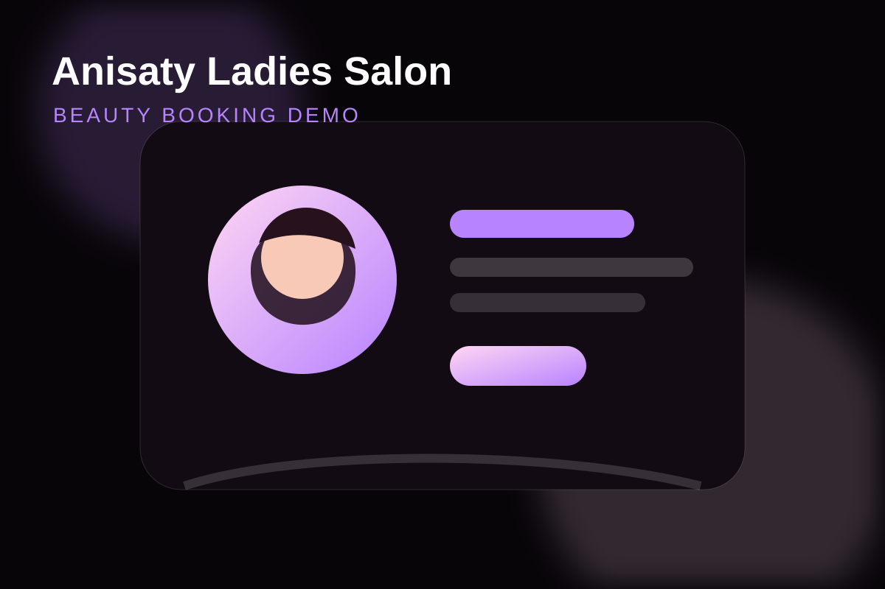
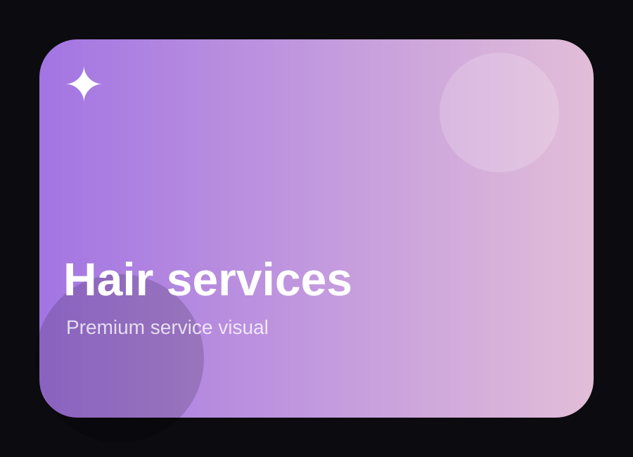
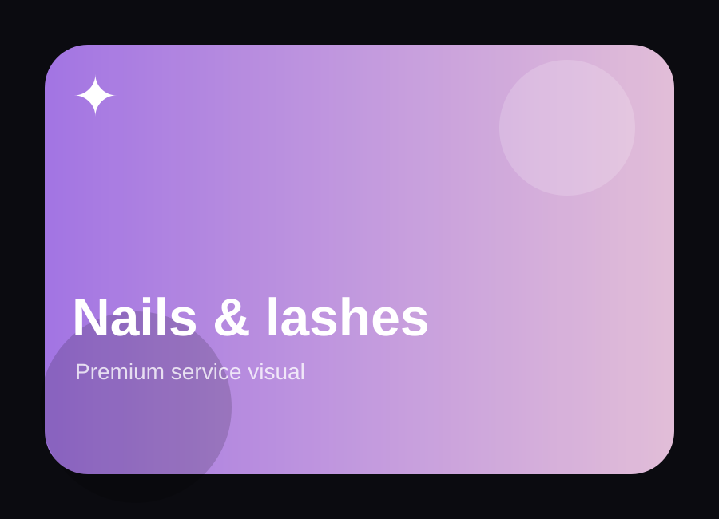
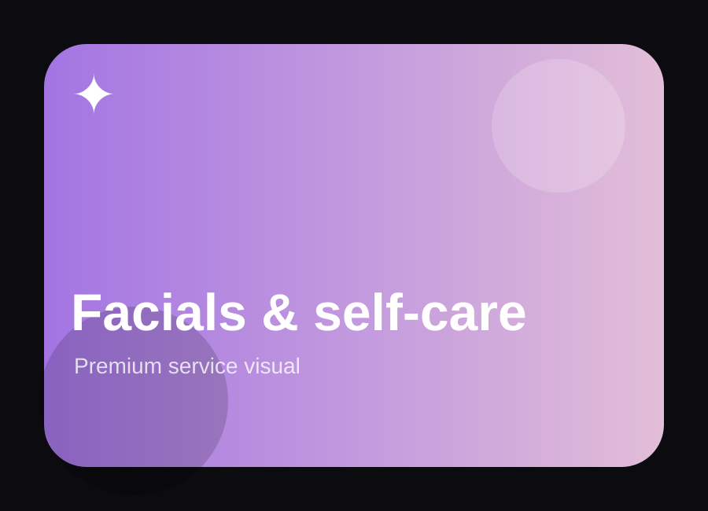

Hair Services
Cuts, styling, color, blowouts, and hair-care packages presented clearly.
Tailored demo concept • Sharjah
A soft, elegant booking concept for clients who want to view services, send appointment details, and get a clear WhatsApp response.

The idea
A ladies salon needs more than a feed. This page gives Instagram visitors one simple path: view services, select what they need, and request a booking.
Visual direction



Conversion flow
Cuts, styling, color, blowouts, and hair-care packages presented clearly.
A simple booking path for beauty add-ons that clients often ask about in DMs.
A calm section for skincare, relaxing treatments, and premium self-care services.
Automation add-on
The form can trigger confirmation messages, reminders, and rebooking follow-ups so fewer clients disappear after the first message.
Demo booking widget
Demo submitted — this would trigger WhatsApp/email automation.